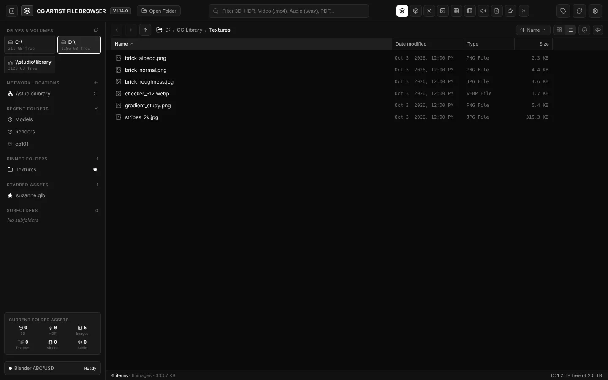

Deep dive
Folders and network drives
Drives, the path bar, the sidebar lists, sorting and selection, network shares, and folder icons.
Drives and the sidebar
The top of the sidebar lists your drives with their free space. Mapped network drives such as Z: appear next to local ones. Long names are cut with an ellipsis; hover a card to see the full name. Below them are four lists:
- Network locations: shares you typed in, plus the network places Windows Explorer already knows. Typed shares can be removed with the cross on their row.
- Recent folders: the last folders you opened, newest first. Folders that are offline are kept and come back when their share does.
- Pinned folders: folders you starred (the star on a folder row). Click the star again to unpin.
- Starred assets: files you starred from their card.
The bottom of the sidebar counts the files in the current folder by type, and shows whether Blender was found.
The path bar
Click a crumb to jump up the path, or the empty part of the bar (or press Ctrl + L) to type a path. The app accepts Windows paths such as D:\Projects, and network paths such as \\mypc\library or //mypc/library. Use Alt + Left and Alt + Right, or the mouse side buttons, to go back and forward. Backspace goes up one folder.
A folder is remembered per session. When you leave a viewer with Esc, you return to the folder you came from.
Filter, type filter and sorting
Ctrl + F puts the cursor in the filter box. Type part of a name and the folder shows only matches. The type buttons next to it limit the view to 3D, HDR, images, video, audio, PDF or Markdown files.
Use the Name button in the path bar to sort by name, date modified, size or type, with folders first if you like. Click a column heading in the details view. The sort is remembered for each folder.

Selecting and changing the view
Selection works as it does in File Explorer. Click selects one item. Ctrl + Click adds or removes one. Shift + Click selects a range, and Shift + arrow keys extend the selection from the anchor. Dragging on empty space draws a box. Home and End jump to the first and last item.
The list icon in the path bar switches to the details view: name, date modified, type and size. Thumbnails in the large icons view can be made larger or smaller with Ctrl + mouse wheel, from 120 to 500 pixels. The size is remembered for each folder.

Press F5 or Ctrl + R to refresh a folder in place. The selection and the view stay as they are.
Network shares
Type a share in the path bar, for example \\studio\library, and press Enter. The share is then listed in the sidebar (up to ten are kept). Slow or offline shares never freeze the app; they are listed as offline until they answer.
Some shares refuse the Windows sign-in that File Explorer used. The app then shows an error that starts with a sign-in message. Click the + next to Network locations, enter the user name and password, and tick Remember if you want the share to reconnect every time the app starts. The password is kept in Windows Credential Manager, not in the app's settings file.
Folder icons
Folders you customised in File Explorer keep their icon here. To change one, right-click the folder and choose Change icon…. Pick an icon from the library, which is made for CG and VFX work (3D, texturing, HDRIs, animation, media, scripts and more), or import your own PNG, SVG, ICO, WebP or JPG file of up to 2 MB. Choosing the default icon again resets the folder. Your choices are kept in the app's settings, so they also appear in the portable version.
Found a mistake or something missing? Edit this page on GitHub.